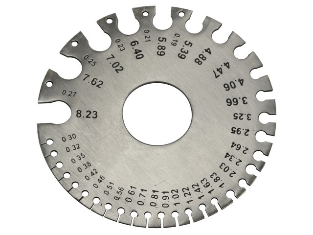
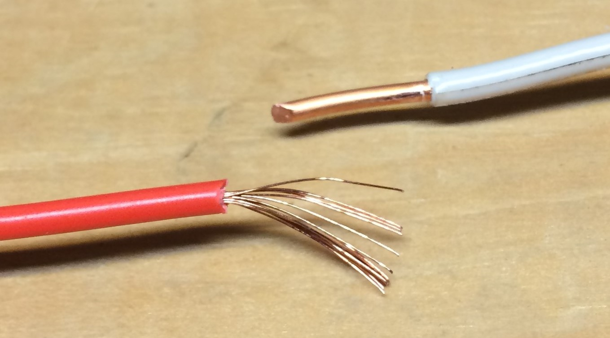
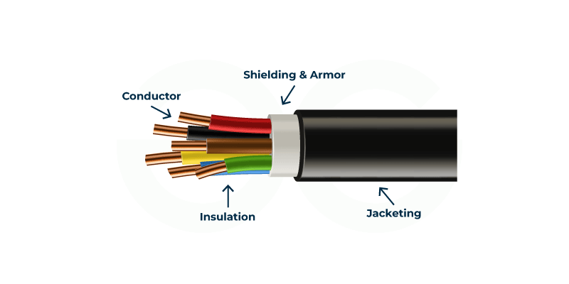

ITI
Electrician Theory Manual
Wires, Joints, Soldering & Underground Cables
👨🏫 Classroom Note: Dosto, ITI CBT pariksha aur interview me is single chapter se kam se
kam 4 se 5 prashn hamesha aate hain. Hum yahan wire gauges, Britannia joints, soft soldering aur underground
cable ki layers ko bohot hi aasan bhasha me padhenge. Notes ko poora padhein!
1. Wires and Conductors (तार और चालक)
Conductor: A material that offers minimum opposition to the
flow of electric current. Wire sizes are systematically calibrated using a Standard Wire Gauge
(SWG).
Aasan Bhasha me Samjho: Jis metal me se electricity aaram
se guzar sake use conductor kehte hain. Copper aur aluminium sabse zyada use hote hain. Kisi bhi
taar ki motai naapne ke liye hum Standard Wire Gauge (SWG) metallic circular disk
ka use karte hain. Yaad rakhna, SWG ka slot number jitna bada hota jayega, taar utna hi patla hota
jayega!

2. Types of Electrical Wire Joints (तारों के जोड़)
Britannia Straight Joint: Specifically designed for overhead
lines to provide extreme mechanical tensile strength against heavy environmental tension.
Aasan Bhasha me Samjho: Overhead power lines me jab do
taaro ko aapas me jodna ho to wahan mechanical kheechaav bohot zyada hota hai. Us kheechaav ko
jhelne ke liye hum Britannia Straight Joint lagate hain. Wahin, agar main wire ko
bina kaate 90-degree par branch connection lena ho, to hum Tee Joint lagate hain.
Length badhane ke liye Western Union joint kaam aata hai.

3. Soldering and Underground Cables (सोल्डरिंग एवं केबल)
Soldering: Joining conductors with a Solder alloy (Tin 60% +
Lead 40%) below 450°C. Flux paste is essential to clean the joint and completely prevent oxidation.
Aasan Bhasha me Samjho: Joints ko permanent karne aur
corrosion se bachane ke liye hum Tin aur Lead se bane solder wire ko garam karke lagate hain.
Soldering iron ki tip taambe (copper) ki hoti hai. Hot soldering ke time surface par oxide na bane,
isliye Flux Paste lagaya jata hai. Underground cables ko zameen ke andar safe
rakhne ke liye layers ka kram hota hai: B.I.M.B.A.S (Bedding, Insulation, Metallic
Sheath, Armouring, Serving).

| Layer Name | Industrial Core Function (NIMI Rules Matrix) |
|---|---|
| Metallic Sheath | Ye Lead/Aluminium ki hoti hai jo cable ko mitti ke andar ki nami (moisture) aur paani se poori tarah surakshit rakhti hai. |
| Bedding | Jute ki layer hoti hai jo andar ki metallic sheath ko upar chadhne wali teekhi armouring se scratch hone se bachati hai. |
| Armouring | Galvanized Iron wires ki hoti hai jo cable ko zameen ke bhari dabav aur mechanical chot se katne se bachati hai. |
5. Master ITI CBT Exam Q&A Bank (20 Anivarya Prashn)
Q1. SWG ka full form kya hai aur ye kya naapta hai?
Ans: Standard Wire Gauge. Ye electrical wires ka diameter (motai) naapne ke
kaam aata hai.
Q2. Agar gauge plate ka slot number 0 se badhkar 36 hota hai, to taar par kya
asar padega?
Ans: Taar ka diameter kam hota jayega, yaani taar patla hota jayega.
Q3. Overhead transmission lines me heavy kheechaav ko jhelne wala joint kaun
sa hai?
Ans: Britannia Straight Joint.
Q4. Main conductor wire ko bina bich se kaate, tappings branch nikalne wala
joint kaun sa hai?
Ans: Britannia Tee Joint (90 degree angle grid drop).
Q5. Do wires ko ek straight line kram me aage badhane ke liye kaun sa jod use
hota hai?
Ans: Western Union Joint.
Q6. Common solder wire kin do metals ka alloy mixture hota hai?
Ans: Tin (60%) aur Lead (40%) ka combination.
Q7. Soldering iron tool ki working bit kis metal ki banayi jati hai?
Ans: Pure Copper (तांबा) ki, iski thermal capacity sabse best hoti hai.
Q8. Soldering process me heat hote waqt metal par oxide layer (Oxidation)
jamne se kaun rokta hai?
Ans: Soldering Flux paste.
Q9. Soft soldering operations kis maximum temperature limit ke andar kiya
jata hai?
Ans: 450°C se niche.
Q10. Underground cable ki sabse pehli aur main layer kaun si hoti hai?
Ans: Conductor Core (jo copper ya aluminium ka hota hai current carrying ke
liye).
Q11. Underground cable conductors ko aapas me short hone se bachane ke liye
kaun sa insulation layer hot hai?
Ans: Oil-Impregnated Paper Insulation.
Q12. Mitti ke andar ki geelapan aur paani ko cable core me ghusne se rokne
wali layer kaun si hai?
Ans: Metallic Sheath (Lead Shield).
Q13. Inme se Bedding layer ka exact function kisko protect karna hota hai?
Ans: Andar wali Metallic Sheath layer ko upar ki teekhi steel armouring se
bachana.
Q14. Pathar ki chot, heavy load compression aur mechanical damage se cable
core ko kaun suraksha deta hai?
Ans: Armouring layer (Galvanized Iron layer).
Q15. Underground cable ki sabse upar wali layer jo atmospheric cover karti
hai use kya bolte hain?
Ans: Serving layer (jute fibrous layer).
Q16. Single core solid wire ke mukable multi-strand conductor ka sabse bada
advantage kya hai?
Ans: High Flexibility (ise aasani se bina toote moda ja sakta hai).
Q17. Simple copper wires ki electrical wiring me kaun sa flux paste use kiya
jata hai?
Ans: Resin / Rosin paste flux.
Q18. 450°C se upar hard alloy brass copper rods ko jodne ki process ko kya
bolte hain?
Ans: Hard Soldering ya Brazing operation.
Q19. Junction box aur conduit panels me wires ko aapas me twist karne wale
joint ko kya kehte hain?
Ans: Pigtail joint ya Rat-Tail / Twist Joint.
Q20. Kisi underground ya general power cable ki insulation thickness kis
metric level par depend karti hai?
Ans: Operating Voltage rating level par.